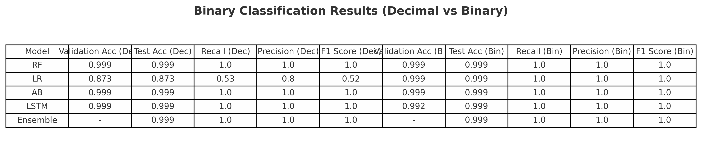
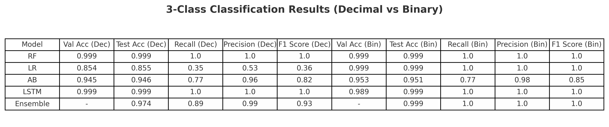
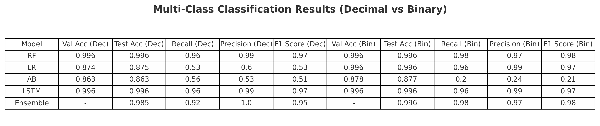
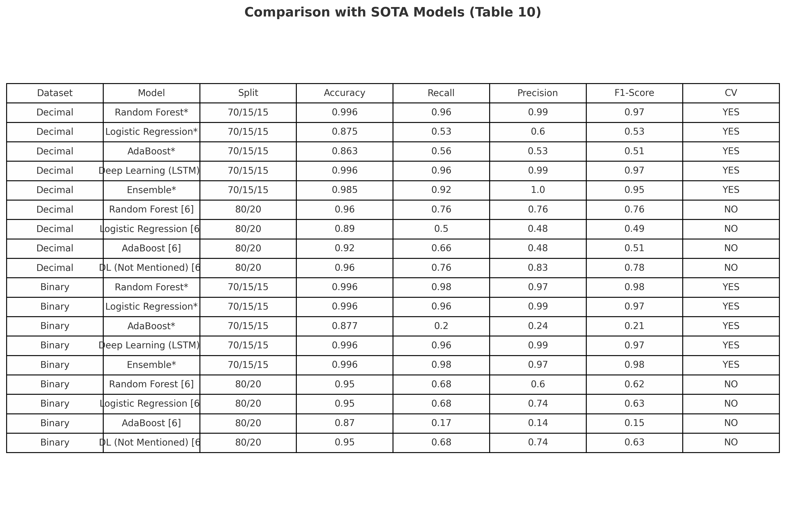

📘 Robust Monocular Depth Estimation Against Adversarial Camouflage
Abstract
Monocular Depth Estimation (MDE) is increasingly used in autonomous vehicles due to its low cost and scalability. However, MDE models are vulnerable to adversarial attacks, which can degrade depth predictions and pose safety risks. In this project, we assess the vulnerability of top MDE models — Monodepth2, DenseDepth, DepthAnythingV2, and ZoeDepth — to optimized 2D adversarial patches based on the 3D2Fool algorithm. Our findings highlight significant variations in model robustness. To address this, we implement adversarial training, which improves resilience and reduces error, helping secure perception systems in AVs.
Methodology
The methodology includes four stages: creating a synthetic dataset using the CARLA simulator, optimizing adversarial patches using a custom loss function, evaluating several MDE models under attack, and applying adversarial training to improve robustness.
- Dataset: 10,500 synthetic images of a 3D car model across varied scenes and camera angles, including weather variations.
- Patch Optimization: A custom loss function was designed to distort depth predictions. Gradient descent was used to maximize this distortion.
- Object Detection & Placement: YOLOv8 was used for robust vehicle detection and patch placement.
- Adversarial Training: DenseDepth was fine-tuned using patched images to enhance resistance without degrading clean image performance.
 (1).png)
Sample Visualizations
.png)
🧪 Experiments
a) Testing Adversarial Patch Effectiveness Across MDE Models
We tested our optimized adversarial patch and another benchmark patch (SPOO) on seven state-of-the-art monocular depth estimation models: Monodepth2, DenseDepth, ZoeDepth, DPT, DepthAnythingV2, AdaBins, and MiDaS.
📊 Metrics like Mean Depth Estimation Error (Ed), Ratio of Affected Region (Ra), and SSIM were used to evaluate the impact.
- ZoeDepth and AdaBins showed minimal numerical deviation, but also low sensitivity to attacks — revealing silent vulnerability.
- Monodepth2 and MiDaS exhibited high Ra and Ed, indicating stronger (and more visible) attack impact.
📸 Figure
images/models_compare.png — Depth map disruptions caused by our patch and SPOO across all models.
b) Adversarial Training with DenseDepth
To enhance robustness, we adversarially trained DenseDepth using 9,450 patched images and corresponding ground truth depth maps. The goal was to restore accurate predictions despite adversarial interference.
Training lasted 50 epochs with a learning rate of 0.0001 and batch size of 16.
Metrics like Ed dropped from 0.0460 → 0.0073 and SSIM rose to 0.9892.
Importantly, performance on clean images was not degraded.
Results Summary
- DenseDepth RMSE: 0.0805 → 0.0105
- SSIM: 0.8446 → 0.9892
- Ed: 0.0460 → 0.0073
📸 Figure
images/Patched (3).png — Before and after adversarial training on the same patched image.
.png)
c) Testing Robustness on a Different Adversarial Patch
We tested the same adversarially trained DenseDepth model on a different patch (SPOO) to verify generalization. Results confirmed strong robustness:
- Ed improved from 0.0381 → 0.0157
- Ra improved from 0.0639 → 0.0120
- SSIM improved from 0.8896 → 0.9608
📸 Figure
images/Patched (4).png — Generalized defense against SPOO patch.
.png)
🔐 Intrusin Deetection System for Internet of Vehicles using ML, DL and Ensemble Methods
Abstract
Modern advancements have laid the foundation for transforming vehicles into autonomous entities with sensors, network capabilities, and embedded software — forming the Internet of Vehicles (IoV). IoV extends traditional VANET systems, enabling real-time interaction between vehicle components and their environments. However, this connectivity introduces significant cybersecurity vulnerabilities. Adversaries can exploit the system, causing data manipulation and critical safety threats. A robust Intrusion Detection System (IDS) is essential to mitigate these risks. This project compares traditional Machine Learning (ML), Deep Learning (DL), and Ensemble Learning (EL) models to determine the most effective techniques for IDS in AVs. We investigate three key questions: (1) Which traditional ML model performs best? (2) Can DL approaches outperform ML? (3) Is EL more effective than standalone models? We use the latest CICIoV2024 dataset to evaluate performance across Random Forest, Logistic Regression, AdaBoost, LSTM, and an ensemble model.
Methodology
The methodology follows a structured pipeline using the CICIoV2024 dataset, involving data preprocessing, model training, evaluation, and comparison. Three research questions are addressed:
- RQ1: Traditional ML models (LR, AdaBoost, RF) are trained and evaluated to determine the most accurate for detecting and classifying IoV attacks.
- RQ2: A Deep Learning model (LSTM) is trained and compared to ML models to assess performance improvements.
- RQ3: An ensemble model (max voting of LR, RF, and AdaBoost) is evaluated to see if combining models improves IDS performance.
.png)
Dataset Description
Decimal Format: Includes message IDs and data bytes (DATA_0 to DATA_7). Classes include Benign, DoS, and Spoofing attacks (Gas, RPM, Speed, Steering Wheel). Each instance is labeled by category and specific class.
Binary Format: Binary representation of message IDs and data bits (ID0 to ID16 and DATA_00 to DATA_716). Allows bit-level analysis of traffic patterns.

Models Used
- Random Forest (RF): Builds multiple decision trees; ideal for high-dimensional data.
- Logistic Regression (LR): Effective binary classifier; interpretable and fast.
- AdaBoost: Boosts weak learners by focusing on misclassified instances for better accuracy.
- Long Short-Term Memory (LSTM): Recurrent neural network well-suited for sequential CAN bus traffic.
- Ensemble Learning: Uses max voting across LR, RF, and AdaBoost for improved robustness.
🧪 Experiments
The results presented below reflect the classification performance of ML, DL, and ensemble models using the CICIoV2024 dataset for binary, 3-class, and multi-class tasks. Metrics such as accuracy, recall, precision, and F1-score were analyzed, along with confusion matrices to provide detailed performance insight.
Binary Classification
RF, AB, LSTM, and the ensemble achieved near-perfect performance with test accuracy of 0.999 and F1-scores of 1.00. LR performed slightly lower but still competitively. Confusion matrices confirmed that most models exhibited minimal misclassifications.

Three-Class Classification
RF, AB, and LSTM showed strong results again with 0.999 test accuracy and F1-scores of 1.00. LR lagged with lower recall and F1-score. Ensemble learning performed robustly across all metrics. The confusion matrix highlighted precise class separation for most models.

Multi-Class Classification
RF and LSTM performed best in the multi-class setup with 0.996 test accuracy. LR and AB yielded slightly weaker results. Ensemble learning once again demonstrated high precision (1.00) and F1-score (0.95), confirming its strength across complex classification tasks.

Comparison with SOTA
Our models outperformed several SOTA benchmarks. For the Decimal dataset, RF and LSTM matched or exceeded SOTA metrics, while ensemble models maintained the highest robustness. In the Binary dataset, LR and Ensemble approaches also surpassed SOTA models in both accuracy and F1-score. Use of cross-validation further ensured reliability and generalization of our findings.